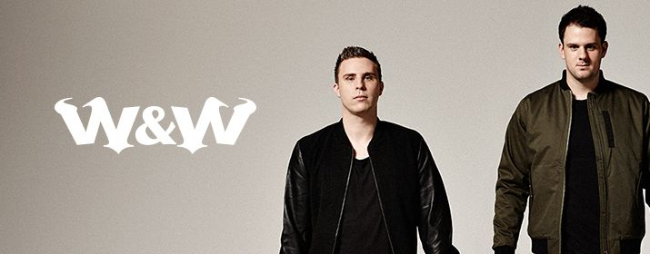

Mainstage: 22:00-23:00!
W&W ist ein niederländisches Trance-Duo, bestehend aus Willem van Hanegem und
Wardt van der Harst – auch bekannt unter seinem Solo-Pseudonym Re-Ward. Ihr
erster großer Erfolg war Mustangim Jahr 2007. Willem ist der Sohn des
gleichnamigen Fußballspielers Willem van Hanegem.
Ihre Karriere begann beim Trance Energy-Festival 2007 in den Niederlanden. Ihr
bislang größter Hit The Codewurde von den Großen der Szene supported und
erschien bei Hardwell´s Label Revealed.
2014 erreichten W&W mit dem Track Bigfooterstmals die Charts in Deutschland
und Österreich. Die jungen Niederländer sind beim EDC in Las Vegas, beim Ultra
Music Festival in Miami und beim Tomorrowland in Belgien auf der Mainstage
vertreten. Derzeit belegt das Duo Platz 18 der DJ Mag Top 100.
W&W war bereits bei der Electric Love Premiere 2013 gebucht, wegen Krankheit
konnte jedoch nur Wardt van der Harst spielen, jedoch lieferte er sich darauf
zusammen mit seinen holländischen DJ-Kollegen Showtek, Chuckie und Dyro ein
unvergessliches b2b2b2b-Set, nachdem Chuckie seinen USB-Stick im Hotel in
München vergessen hatte.